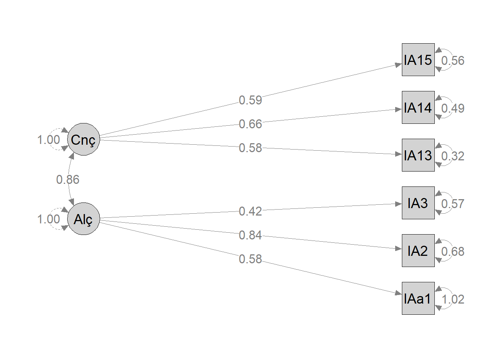
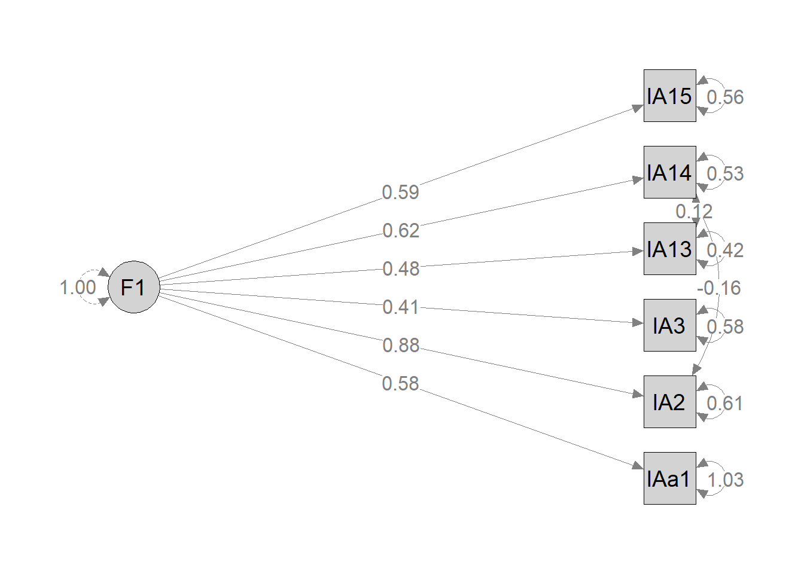
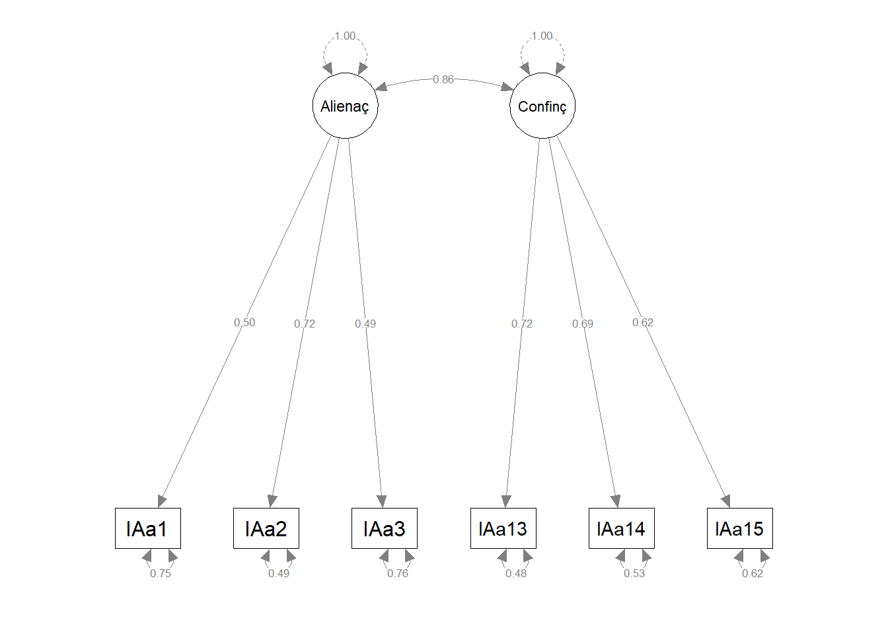

library(foreign)
library(tidyverse)
library(lavaan)
library(semPlot)
library(performance)
library(easystats)
library(kableExtra)9 Lista 8 - CFA e Path Analysis
9.1 a) Regressão linear
Exercício
Veja o banco de dados DADOSPATH.sav. Nele temos os dados de Idade, IMC, numero de treinos e sociabilidade (questionario) de um grupo de 94 pessoas. Faca um modelo de regressao linear tendo como variavel dependente o numero de Treinos e as demais variaveis como independentes.
original = read.spss("DADOS PATH.sav", to.data.frame=TRUE)
modelo_1 = lm(Treinos ~ Idade + IMC1 + Sociabilidade, data = original)Modelo:
\[ Y \sim \beta_0 + \beta_1*idade + \beta_2*IMC1 + \beta_3*Sociabilidade + \epsilon \]
Resultados
kable(summary(modelo_1)$coef)| Estimate | Std. Error | t value | Pr(>|t|) | |
|---|---|---|---|---|
| (Intercept) | 78.0103771 | 33.1315541 | 2.3545644 | 0.0207191 |
| Idade | 1.9071028 | 0.5479748 | 3.4802749 | 0.0007745 |
| IMC1 | -2.8021799 | 1.1809989 | -2.3727202 | 0.0197865 |
| Sociabilidade | 0.5177685 | 0.5903261 | 0.8770889 | 0.3827736 |
Um modelo linear (estimado usando Mínimos Quadrados Ordinários - OLS) foi utilizado para prever a variável Treinos com base nas variáveis Idade, IMC1 e Sociabilidade. O modelo explica uma proporção estatisticamente significativa e moderada da variância (R² = 0,14, F(3, 90) = 5,06, p = 0,003, R² ajustado = 0,12). Dentro desse modelo: • O efeito da Idade é estatisticamente significativo e positivo (beta = 1,91, IC 95% [0,82, 3,00], t(90) = 3,48, p < 0,001; Beta padronizado = 0,35, IC 95% [0,15, 0,56]) • O efeito do IMC1 é estatisticamente significativo e negativo (beta = -2,80, IC 95% [-5,15, -0,46], t(90) = -2,37, p = 0,020; Beta padronizado = -0,24, IC 95% [-0,44, -0,04]) • O efeito da Sociabilidade é estatisticamente não significativo e positivo (beta = 0,52, IC 95% [-0,66, 1,69], t(90) = 0,88, p = 0,383; Beta padronizado = 0,09, IC 95% [-0,11, 0,28]) Parâmetros padronizados foram obtidos ajustando o modelo a uma versão padronizada do conjunto de dados. Intervalos de Confiança (ICs) de 95% e valores-p foram calculados usando uma aproximação da distribuição t de Wald.
9.2 b) Path Analysis
Exercício
Com base no mesmo banco acima faça uma Path Analysis e monte um diagrama no AMOS R. Compare os resultados com os dados encontrados na regressão linear.
path_1 = "Treinos ~ Idade + IMC1 + Sociabilidade"
path_model_1 = sem(
model = path_1,
data = original,
)Tabela com os resultados
Como sempre, podemos utilizar a função summary() para retornar um resumo com os resultados do modelo
summary(path_model_1) # posso colocar o parametro fit.measures = TRUE para obter os valores de aderência do modelolavaan 0.6.16 ended normally after 1 iteration
Estimator ML
Optimization method NLMINB
Number of model parameters 4
Number of observations 94
Model Test User Model:
Test statistic 0.000
Degrees of freedom 0
Parameter Estimates:
Standard errors Standard
Information Expected
Information saturated (h1) model Structured
Regressions:
Estimate Std.Err z-value P(>|z|)
Treinos ~
Idade 1.907 0.536 3.557 0.000
IMC1 -2.802 1.156 -2.425 0.015
Sociabilidade 0.518 0.578 0.896 0.370
Variances:
Estimate Std.Err z-value P(>|z|)
.Treinos 2050.999 299.169 6.856 0.000No caso da path analisys recomendamos utilizar a função parameterEstimates() do pacote lavaan para ter uma tabela mais direta com os resultados dos estimadores.
kable(parameterEstimates(path_model_1))| lhs | op | rhs | est | se | z | pvalue | ci.lower | ci.upper |
|---|---|---|---|---|---|---|---|---|
| Treinos | ~ | Idade | 1.9071028 | 0.5361890 | 3.5567736 | 0.0003754 | 0.8561917 | 2.9580139 |
| Treinos | ~ | IMC1 | -2.8021799 | 1.1555981 | -2.4248741 | 0.0153137 | -5.0671106 | -0.5372493 |
| Treinos | ~ | Sociabilidade | 0.5177685 | 0.5776294 | 0.8963679 | 0.3700563 | -0.6143644 | 1.6499014 |
| Treinos | ~~ | Treinos | 2050.9987436 | 299.1689143 | 6.8556546 | 0.0000000 | 1464.6384463 | 2637.3590409 |
| Idade | ~~ | Idade | 82.5840878 | 0.0000000 | NA | NA | 82.5840878 | 82.5840878 |
| Idade | ~~ | IMC1 | 10.7872961 | 0.0000000 | NA | NA | 10.7872961 | 10.7872961 |
| Idade | ~~ | Sociabilidade | 3.7635808 | 0.0000000 | NA | NA | 3.7635808 | 3.7635808 |
| IMC1 | ~~ | IMC1 | 17.7567863 | 0.0000000 | NA | NA | 17.7567863 | 17.7567863 |
| IMC1 | ~~ | Sociabilidade | 1.2498636 | 0.0000000 | NA | NA | 1.2498636 | 1.2498636 |
| Sociabilidade | ~~ | Sociabilidade | 65.6008375 | 0.0000000 | NA | NA | 65.6008375 | 65.6008375 |
Os resultados foram os mesmos obtidos tanto pela path analysis quanto pela regressão linear simples.
Indices de qualidade do modelo
model_performance(path_model_1, metrics = c("Chi2", "Chi2_df", "NFI", "NNFI", "CFI", "RMSEA", "AIC", "BIC"))# Indices of model performance
Chi2(0) | NFI | NNFI | CFI | RMSEA | AIC | BIC
------------------------------------------------------------
0.000 | 1.000 | 1.000 | 1.000 | 0.000 | 991.612 | 1001.785AIC(path_model_1)[1] 991.6122Diagrama da path analysis
P <- semPaths(
object = path_model_1,
what = "path",
whatLabels = "par",
style = "ram",
layout = "tree",
rotation = 2,
sizeMan = 7,
sizeLat = 7,
color = "lightgray",
edge.label.cex = 1.2,
label.cex = 1.3
)
9.3 c) CFA
Exercício
Veja o banco de dados Fatorial escala.sav. Faça uma Análise fatorial confirmatória (CFA) gerando os seguintes fatores com base no questionário de apego a amigos (IAA).
Segundo a teoria esperada, os fatores teriam o seguinte agrupamento: a. Confianca – Q13 Q14 Q15 b. Alienacao – Q1 Q2 Q3 Monte o diagrama e discuta a qualidade do modelo e suas limitações caso existam.
Equação do Modelo 1:
cfa_eq = " Alienação =~ IAa1 + IAa2 + IAa3 Confiança =~ IAa13 + IAa14 + IAa15 "
Análise Fatorial Confirmatória do modelo 1
cfa_modelo = cfa( model = cfa_eq, data = dados_CFA, std.lv = TRUE )
dados_CFA = read.spss("fatorial CFA.sav", to.data.frame=TRUE)cfa_eq = "
Alienação =~ IAa1 + IAa2 + IAa3
Confiança =~ IAa13 + IAa14 + IAa15
"cfa_modelo = cfa(
model = cfa_eq,
data = dados_CFA,
std.lv = TRUE #If TRUE, the metric of each latent variable is determined by fixing their (residual) variances to 1.0. If FALSE, the metric of each latent variable is determined by fixing the factor loading of the first indicator to 1.0.
)Resultados do modelo sem covariâncias entre os resíduos (modelo 1)
summary(cfa_modelo) # posso colocar no summary o parametro fit.measures = TRUElavaan 0.6.16 ended normally after 18 iterations
Estimator ML
Optimization method NLMINB
Number of model parameters 13
Used Total
Number of observations 347 348
Model Test User Model:
Test statistic 39.166
Degrees of freedom 8
P-value (Chi-square) 0.000
Parameter Estimates:
Standard errors Standard
Information Expected
Information saturated (h1) model Structured
Latent Variables:
Estimate Std.Err z-value P(>|z|)
Alienação =~
IAa1 0.578 0.069 8.408 0.000
IAa2 0.842 0.069 12.135 0.000
IAa3 0.423 0.051 8.278 0.000
Confiança =~
IAa13 0.580 0.044 13.279 0.000
IAa14 0.660 0.052 12.652 0.000
IAa15 0.586 0.053 11.105 0.000
Covariances:
Estimate Std.Err z-value P(>|z|)
Alienação ~~
Confiança 0.865 0.051 16.807 0.000
Variances:
Estimate Std.Err z-value P(>|z|)
.IAa1 1.023 0.088 11.607 0.000
.IAa2 0.676 0.089 7.627 0.000
.IAa3 0.568 0.049 11.667 0.000
.IAa13 0.316 0.036 8.898 0.000
.IAa14 0.485 0.051 9.564 0.000
.IAa15 0.564 0.052 10.767 0.000
Alienação 1.000
Confiança 1.000 kable(parameterEstimates(cfa_modelo))| lhs | op | rhs | est | se | z | pvalue | ci.lower | ci.upper |
|---|---|---|---|---|---|---|---|---|
| Alienação | =~ | IAa1 | 0.5783085 | 0.0687768 | 8.408481 | 0 | 0.4435084 | 0.7131086 |
| Alienação | =~ | IAa2 | 0.8419500 | 0.0693835 | 12.134735 | 0 | 0.7059609 | 0.9779391 |
| Alienação | =~ | IAa3 | 0.4226729 | 0.0510624 | 8.277581 | 0 | 0.3225925 | 0.5227533 |
| Confiança | =~ | IAa13 | 0.5796173 | 0.0436497 | 13.278840 | 0 | 0.4940655 | 0.6651691 |
| Confiança | =~ | IAa14 | 0.6603480 | 0.0521921 | 12.652247 | 0 | 0.5580533 | 0.7626427 |
| Confiança | =~ | IAa15 | 0.5856667 | 0.0527386 | 11.105077 | 0 | 0.4823008 | 0.6890325 |
| IAa1 | ~~ | IAa1 | 1.0234312 | 0.0881741 | 11.606933 | 0 | 0.8506131 | 1.1962493 |
| IAa2 | ~~ | IAa2 | 0.6763156 | 0.0886784 | 7.626611 | 0 | 0.5025092 | 0.8501221 |
| IAa3 | ~~ | IAa3 | 0.5677370 | 0.0486609 | 11.667220 | 0 | 0.4723635 | 0.6631105 |
| IAa13 | ~~ | IAa13 | 0.3160382 | 0.0355192 | 8.897671 | 0 | 0.2464219 | 0.3856546 |
| IAa14 | ~~ | IAa14 | 0.4851673 | 0.0507280 | 9.564088 | 0 | 0.3857422 | 0.5845925 |
| IAa15 | ~~ | IAa15 | 0.5636709 | 0.0523500 | 10.767362 | 0 | 0.4610669 | 0.6662750 |
| Alienação | ~~ | Alienação | 1.0000000 | 0.0000000 | NA | NA | 1.0000000 | 1.0000000 |
| Confiança | ~~ | Confiança | 1.0000000 | 0.0000000 | NA | NA | 1.0000000 | 1.0000000 |
| Alienação | ~~ | Confiança | 0.8646695 | 0.0514471 | 16.806951 | 0 | 0.7638349 | 0.9655040 |
Os resultados da análise de equações estruturais indicam que o modelo ajustado apresenta um bom ajuste aos dados observados (χ² = 39,166, df = 8, p < 0,001). O modelo envolve duas variáveis latentes, “Alienação” e “Confiança”, e suas variáveis observadas.
Os coeficientes de carga (estimates) indicam que as perguntas associadas a “Alienação” (IAa1, IAa2, IAa3) e “Confiança” (IAa13, IAa14, IAa15) têm influências positivas significativas em suas respectivas variáveis latentes.
Além disso, a covariância entre “Alienação” e “Confiança” é estatisticamente significativa (estimate = 0,865, p < 0,001), sugerindo uma relação entre essas duas dimensões.
Esses resultados fornecem evidências de que o modelo proposto é estatisticamente significativo.
Índices de qualidade do modelo 1
model_performance(cfa_modelo, metrics = c("Chi2", "Chi2_df", "NFI", "CFI", "RMSEA", "p_RMSEA", "AIC", "BIC", "NNFI") )# Indices of model performance
Chi2(8) | NFI | CFI | RMSEA | p (RMSEA) | AIC | BIC | NNFI
-------------------------------------------------------------------------
39.166 | 0.918 | 0.933 | 0.106 | 0.003 | 5402.476 | 5452.517 | 0.874Os resultados dos índices de qualidade indicam que o modelo apresenta uma adequada qualidade de aderência aos dados observados, conforme evidenciado pelos índices de ajuste (NFI, CFI) acima de 0.9. Apenas o NNFI (ou TFI) está abaixo de 0.9, indicando um bom ajuste relativo.
No entanto, o valor do RMSEA é alto (10%), indicando que o modelo pode ser aprimorado.
Os valores de AIC e BIC serão utilizados para efeito de comparação com os modelos a seguir.
Diagrama da CFA com o modelo 1
plot_CFA <- semPaths(
object = cfa_modelo,
what = "path",
whatLabels = "par",
style = "ram",
layout = "tree",
rotation = 2,
sizeMan = 7,
sizeLat = 7,
color = "lightgray",
edge.label.cex = 1.2,
label.cex = 1.3
)
Verificar os índices de modificações do modelo 1
Os índices de modificação podem ser obtidos utilizando a função modindices(). Por padrão, os índices de modificação são impressos para cada parâmetro não livre (ou fixado como zero). Os índices de modificação são complementados pelos valores de mudança esperada nos parâmetros (EPC) (coluna epc). As últimas três colunas contêm os valores padronizados de EPC (sepc.lv: padronização apenas das variáveis latentes; sepc.all: padronização de todas as variáveis; sepc.nox: padronização de todas, exceto variáveis observadas exógenas).
kable(modificationindices(cfa_modelo, sort = TRUE, minimum.value = 5))| lhs | op | rhs | mi | epc | sepc.lv | sepc.all | sepc.nox | |
|---|---|---|---|---|---|---|---|---|
| 34 | IAa13 | ~~ | IAa14 | 18.245523 | 0.1825252 | 0.1825252 | 0.4661302 | 0.4661302 |
| 18 | Alienação | =~ | IAa15 | 18.245517 | 0.9569991 | 0.9569991 | 1.0050447 | 1.0050447 |
| 29 | IAa2 | ~~ | IAa14 | 17.160433 | -0.2043919 | -0.2043919 | -0.3568151 | -0.3568151 |
| 30 | IAa2 | ~~ | IAa15 | 10.461405 | 0.1539148 | 0.1539148 | 0.2492832 | 0.2492832 |
| 20 | Confiança | =~ | IAa2 | 8.403845 | -1.6415789 | -1.6415789 | -1.3947817 | -1.3947817 |
| 23 | IAa1 | ~~ | IAa3 | 8.403843 | -0.1390871 | -0.1390871 | -0.1824669 | -0.1824669 |
| 35 | IAa13 | ~~ | IAa15 | 5.006171 | -0.0840609 | -0.0840609 | -0.1991642 | -0.1991642 |
| 17 | Alienação | =~ | IAa14 | 5.006165 | -0.5603084 | -0.5603084 | -0.5837728 | -0.5837728 |
Novo modelo com a covariância dos resíduos (modelo 2)
cfa_eq_2 = "
Alienação =~ IAa1 + IAa2 + IAa3
Confiança =~ IAa13 + IAa14 + IAa15
# Covariancia dos resíduos
IAa1 ~~ IAa3
IAa13 ~~ IAa14
IAa13 ~~ IAa15
"cfa_modelo_2 = cfa(
model = cfa_eq_2,
data = dados_CFA,
std.lv = TRUE
)Equação do Modelo 2:
cfa_eq_2 = " Alienação =~ IAa1 + IAa2 + IAa3 Confiança =~ IAa13 + IAa14 + IAa15 # Covariancia dos resíduos IAa1 ~~ IAa3 IAa13 ~~ IAa14 IAa13 ~~ IAa15 "
Análise Fatorial Confirmatória do modelo 2
cfa_modelo_2 = cfa( model = cfa_eq_2, data = dados_CFA, std.lv = TRUE )
Resultados modelo 2
summary(cfa_modelo_2) # posso colocar no summary o parametro fit.measures = TRUElavaan 0.6.16 ended normally after 24 iterations
Estimator ML
Optimization method NLMINB
Number of model parameters 16
Used Total
Number of observations 347 348
Model Test User Model:
Test statistic 14.194
Degrees of freedom 5
P-value (Chi-square) 0.014
Parameter Estimates:
Standard errors Standard
Information Expected
Information saturated (h1) model Structured
Latent Variables:
Estimate Std.Err z-value P(>|z|)
Alienação =~
IAa1 0.625 0.069 9.009 0.000
IAa2 0.844 0.066 12.774 0.000
IAa3 0.440 0.052 8.484 0.000
Confiança =~
IAa13 0.486 0.054 9.010 0.000
IAa14 0.558 0.057 9.744 0.000
IAa15 0.627 0.058 10.741 0.000
Covariances:
Estimate Std.Err z-value P(>|z|)
.IAa1 ~~
.IAa3 -0.131 0.047 -2.812 0.005
.IAa13 ~~
.IAa14 0.156 0.042 3.700 0.000
.IAa15 0.005 0.037 0.123 0.902
Alienação ~~
Confiança 0.945 0.063 15.041 0.000
Variances:
Estimate Std.Err z-value P(>|z|)
.IAa1 0.968 0.088 11.049 0.000
.IAa2 0.674 0.081 8.299 0.000
.IAa3 0.553 0.049 11.303 0.000
.IAa13 0.416 0.048 8.717 0.000
.IAa14 0.609 0.059 10.323 0.000
.IAa15 0.514 0.060 8.497 0.000
Alienação 1.000
Confiança 1.000 kable(parameterEstimates(cfa_modelo_2))| lhs | op | rhs | est | se | z | pvalue | ci.lower | ci.upper |
|---|---|---|---|---|---|---|---|---|
| Alienação | =~ | IAa1 | 0.6246375 | 0.0693348 | 9.0090043 | 0.0000000 | 0.4887438 | 0.7605313 |
| Alienação | =~ | IAa2 | 0.8436173 | 0.0660435 | 12.7736683 | 0.0000000 | 0.7141745 | 0.9730601 |
| Alienação | =~ | IAa3 | 0.4398298 | 0.0518412 | 8.4841676 | 0.0000000 | 0.3382228 | 0.5414367 |
| Confiança | =~ | IAa13 | 0.4855333 | 0.0538885 | 9.0099663 | 0.0000000 | 0.3799138 | 0.5911527 |
| Confiança | =~ | IAa14 | 0.5583551 | 0.0573047 | 9.7436136 | 0.0000000 | 0.4460399 | 0.6706703 |
| Confiança | =~ | IAa15 | 0.6267943 | 0.0583571 | 10.7406769 | 0.0000000 | 0.5124166 | 0.7411721 |
| IAa1 | ~~ | IAa3 | -0.1314725 | 0.0467540 | -2.8120052 | 0.0049234 | -0.2231086 | -0.0398363 |
| IAa13 | ~~ | IAa14 | 0.1558199 | 0.0421126 | 3.7000779 | 0.0002155 | 0.0732807 | 0.2383591 |
| IAa13 | ~~ | IAa15 | 0.0045594 | 0.0370060 | 0.1232056 | 0.9019443 | -0.0679712 | 0.0770899 |
| IAa1 | ~~ | IAa1 | 0.9676998 | 0.0875801 | 11.0493149 | 0.0000000 | 0.7960460 | 1.1393536 |
| IAa2 | ~~ | IAa2 | 0.6735053 | 0.0811578 | 8.2987178 | 0.0000000 | 0.5144390 | 0.8325716 |
| IAa3 | ~~ | IAa3 | 0.5529392 | 0.0489190 | 11.3031626 | 0.0000000 | 0.4570597 | 0.6488186 |
| IAa13 | ~~ | IAa13 | 0.4162519 | 0.0477495 | 8.7174157 | 0.0000000 | 0.3226647 | 0.5098391 |
| IAa14 | ~~ | IAa14 | 0.6094664 | 0.0590382 | 10.3232593 | 0.0000000 | 0.4937537 | 0.7251790 |
| IAa15 | ~~ | IAa15 | 0.5138053 | 0.0604718 | 8.4966149 | 0.0000000 | 0.3952828 | 0.6323277 |
| Alienação | ~~ | Alienação | 1.0000000 | 0.0000000 | NA | NA | 1.0000000 | 1.0000000 |
| Confiança | ~~ | Confiança | 1.0000000 | 0.0000000 | NA | NA | 1.0000000 | 1.0000000 |
| Alienação | ~~ | Confiança | 0.9447949 | 0.0628146 | 15.0410074 | 0.0000000 | 0.8216805 | 1.0679092 |
Os resultados da análise indicam que o modelo apresenta um razoável ajuste aos dados observados, conforme evidenciado pelos índices de ajuste, embora o teste qui-quadrado seja estatisticamente significativo (χ² = 14.194, df = 5, p = 0.014), indicando diferenças entre o modelo e os dados.
As cargas fatoriais para os indicadores associados às variáveis latentes “Alienação” e “Confiança” são todas estatisticamente significativas (p < 0.001), indicando que esses indicadores têm uma relação com suas respectivas variáveis latentes.
Índices de qualidade do modelo 2
model_performance(cfa_modelo_2, metrics = c("Chi2", "Chi2_df", "NFI", "CFI", "RMSEA", "p_RMSEA", "AIC", "BIC", "NNFI"))# Indices of model performance
Chi2(5) | NFI | CFI | RMSEA | p (RMSEA) | AIC | BIC | NNFI
-------------------------------------------------------------------------
14.194 | 0.970 | 0.980 | 0.073 | 0.165 | 5383.504 | 5445.093 | 0.940Os resultados dos índices de qualidade indicam que o modelo apresenta uma adequada qualidade de aderência aos dados observados, conforme evidenciado pelos índices de ajuste (NFI, CFI e NNFI) acima de 0.9.
No entanto, o valor do RMSEA é moderado (7%), indicando que o modelo pode ser aprimorado.
Os valores de AIC e BIC serão utilizados para efeito de comparação com os modelos a seguir.
Diagrama do modelo 2
plot_CFA <- semPaths(
object = cfa_modelo_2,
what = "path",
whatLabels = "par",
style = "ram",
layout = "tree",
rotation = 2,
sizeMan = 7,
sizeLat = 7,
color = "lightgray",
edge.label.cex = 1.2,
label.cex = 1.3
)
Comparação entre os modelos
compare_performance(cfa_modelo, cfa_modelo_2,
metrics = c("NFI", "CFI", "RMSEA", "p_RMSEA", "AIC", "BIC", "NNFI"),
rank = TRUE, verbose = F)# Comparison of Model Performance Indices
Name | Model | NFI | CFI | RMSEA | p (RMSEA) | NNFI | AIC weights | BIC weights | Performance-Score
-----------------------------------------------------------------------------------------------------------------
cfa_modelo_2 | lavaan | 0.970 | 0.980 | 0.073 | 0.165 | 0.940 | 1.000 | 0.976 | 85.71%
cfa_modelo | lavaan | 0.918 | 0.933 | 0.106 | 0.003 | 0.874 | 7.59e-05 | 0.024 | 14.29%O modelo_2 demonstra superioridade em relação ao modelo_1 com base nos critérios de ajuste avaliados.
9.4 Complementar: Modelo com apenas um fator latente (modelo 3)
cfa_eq_3 = "
F1 =~ IAa1 + IAa2 + IAa3 + IAa13 + IAa14 + IAa15
"cfa_modelo_3 = cfa(
model = cfa_eq_3,
data = dados_CFA,
std.lv = TRUE
)Equação do modelo 3:
cfa_eq_3 = " F1 =~ IAa1 + IAa2 + IAa3 + IAa13 + IAa14 + IAa15 "
Análise Fatorial Confirmatória do modelo 2
cfa_modelo_3 = cfa( model = cfa_eq_3, data = dados_CFA, std.lv = TRUE )
Resultados do modelo 3
kable(parameterEstimates(cfa_modelo_3))| lhs | op | rhs | est | se | z | pvalue | ci.lower | ci.upper |
|---|---|---|---|---|---|---|---|---|
| F1 | =~ | IAa1 | 0.5580340 | 0.0664300 | 8.400335 | 0 | 0.4278336 | 0.6882343 |
| F1 | =~ | IAa2 | 0.7651182 | 0.0637750 | 11.997154 | 0 | 0.6401216 | 0.8901149 |
| F1 | =~ | IAa3 | 0.4044799 | 0.0493864 | 8.190103 | 0 | 0.3076843 | 0.5012755 |
| F1 | =~ | IAa13 | 0.5564023 | 0.0432259 | 12.871965 | 0 | 0.4716811 | 0.6411235 |
| F1 | =~ | IAa14 | 0.6400430 | 0.0517363 | 12.371268 | 0 | 0.5386419 | 0.7414442 |
| F1 | =~ | IAa15 | 0.5959511 | 0.0519930 | 11.462144 | 0 | 0.4940467 | 0.6978555 |
| IAa1 | ~~ | IAa1 | 1.0464704 | 0.0865635 | 12.089050 | 0 | 0.8768091 | 1.2161317 |
| IAa2 | ~~ | IAa2 | 0.7997900 | 0.0764096 | 10.467135 | 0 | 0.6500299 | 0.9495502 |
| IAa3 | ~~ | IAa3 | 0.5827853 | 0.0479619 | 12.151008 | 0 | 0.4887817 | 0.6767889 |
| IAa13 | ~~ | IAa13 | 0.3424110 | 0.0348598 | 9.822517 | 0 | 0.2740870 | 0.4107349 |
| IAa14 | ~~ | IAa14 | 0.5115718 | 0.0501136 | 10.208248 | 0 | 0.4133510 | 0.6097926 |
| IAa15 | ~~ | IAa15 | 0.5515190 | 0.0510740 | 10.798424 | 0 | 0.4514157 | 0.6516222 |
| F1 | ~~ | F1 | 1.0000000 | 0.0000000 | NA | NA | 1.0000000 | 1.0000000 |
O modelo de uma única variável latente “F1” apresenta um ajuste geral adequado aos dados, conforme indicado pelo teste qui-quadrado significativo (χ² = 45.034, df = 9, p = 0.000).
As cargas fatoriais dos indicadores para “F1” são todas estatisticamente significativas (p < 0.001), indicando que essas variáveis observadas têm uma relação com a variável latente “F1”.
Índices de qualidade do modelo 3
model_performance(cfa_modelo_3, metrics = c("Chi2", "Chi2_df", "NFI", "CFI", "RMSEA", "p_RMSEA", "AIC", "BIC", "NNFI") )# Indices of model performance
Chi2(9) | NFI | CFI | RMSEA | p (RMSEA) | AIC | BIC | NNFI
-------------------------------------------------------------------------
45.034 | 0.906 | 0.922 | 0.107 | 0.001 | 5406.344 | 5452.536 | 0.870Diagrama do modelo 3
plot_CFA <- semPaths(
object = cfa_modelo_3,
what = "path",
whatLabels = "par",
style = "ram",
layout = "tree",
rotation = 2,
sizeMan = 7,
sizeLat = 7,
color = "lightgray",
edge.label.cex = 1.2,
label.cex = 1.3
)
Índices de modificação para o modelo
kable(modificationindices(cfa_modelo_3, standardized = FALSE, minimum.value = 5))| lhs | op | rhs | mi | epc | |
|---|---|---|---|---|---|
| 16 | IAa1 | ~~ | IAa13 | 6.419170 | -0.1034145 |
| 19 | IAa2 | ~~ | IAa3 | 5.260435 | 0.1017547 |
| 21 | IAa2 | ~~ | IAa14 | 19.900038 | -0.2224777 |
| 22 | IAa2 | ~~ | IAa15 | 6.284104 | 0.1223301 |
| 26 | IAa13 | ~~ | IAa14 | 24.013115 | 0.1712177 |
9.5 Modelo 4 com covariância entre os resíduos
cfa_eq_4 = "
F1 =~ IAa1 + IAa2 + IAa3 + IAa13 + IAa14 + IAa15
#Covariância dos resíduos
IAa2 ~~ IAa14
IAa13 ~~ IAa14
"Análise Fatorial Confirmatória do modelo 4
cfa_modelo_4 = cfa(
model = cfa_eq_4,
data = dados_CFA,
std.lv = TRUE
)Resultados do modelo 4
kable(parameterEstimates(cfa_modelo_4))| lhs | op | rhs | est | se | z | pvalue | ci.lower | ci.upper |
|---|---|---|---|---|---|---|---|---|
| F1 | =~ | IAa1 | 0.5755782 | 0.0658579 | 8.739696 | 0.0000000 | 0.4464990 | 0.7046573 |
| F1 | =~ | IAa2 | 0.8812882 | 0.0659778 | 13.357336 | 0.0000000 | 0.7519740 | 1.0106024 |
| F1 | =~ | IAa3 | 0.4106200 | 0.0490163 | 8.377216 | 0.0000000 | 0.3145499 | 0.5066902 |
| F1 | =~ | IAa13 | 0.4773285 | 0.0461558 | 10.341675 | 0.0000000 | 0.3868648 | 0.5677923 |
| F1 | =~ | IAa14 | 0.6235655 | 0.0604044 | 10.323181 | 0.0000000 | 0.5051751 | 0.7419560 |
| F1 | =~ | IAa15 | 0.5905868 | 0.0525289 | 11.243084 | 0.0000000 | 0.4876320 | 0.6935415 |
| IAa2 | ~~ | IAa14 | -0.1604716 | 0.0490176 | -3.273757 | 0.0010613 | -0.2565442 | -0.0643989 |
| IAa13 | ~~ | IAa14 | 0.1249518 | 0.0402391 | 3.105235 | 0.0019013 | 0.0460846 | 0.2038189 |
| IAa1 | ~~ | IAa1 | 1.0265817 | 0.0852570 | 12.041031 | 0.0000000 | 0.8594811 | 1.1936823 |
| IAa2 | ~~ | IAa2 | 0.6085266 | 0.0820552 | 7.416062 | 0.0000000 | 0.4477013 | 0.7693519 |
| IAa3 | ~~ | IAa3 | 0.5777805 | 0.0475147 | 12.160028 | 0.0000000 | 0.4846534 | 0.6709077 |
| IAa13 | ~~ | IAa13 | 0.4241519 | 0.0395633 | 10.720852 | 0.0000000 | 0.3466093 | 0.5016945 |
| IAa14 | ~~ | IAa14 | 0.5298461 | 0.0642606 | 8.245273 | 0.0000000 | 0.4038976 | 0.6557945 |
| IAa15 | ~~ | IAa15 | 0.5578837 | 0.0519546 | 10.737912 | 0.0000000 | 0.4560546 | 0.6597128 |
| F1 | ~~ | F1 | 1.0000000 | 0.0000000 | NA | NA | 1.0000000 | 1.0000000 |
Os resultados do modelo sugerem que o ajuste do modelo aos dados é razoável, conforme indicado pelo teste qui-quadrado (χ² = 12.216, df = 7, p = 0.094). O modelo envolve uma única variável latente “F1,” e por seis variáveis observadas (IAa1, IAa2, IAa3, IAa13, IAa14, IAa15). As cargas fatoriais associadas a cada indicador são todas estatisticamente significativas (p < 0.001), indicando uma relação entre esses indicadores e a variável latente “F1”. As variâncias dos indicadores também são significativas, sugerindo que cada indicador contribui para a variabilidade total da variável latente “F1”.
Além disso, há duas covariâncias estimadas entre os indicadores: uma entre IAa2 e IAa14, e outra entre IAa13 e IAa14. Essas covariâncias indicam associações adicionais entre os indicadores além daquelas explicadas pelas relações com a variável latente “F1”.
Índices de qualidade do modelo 4
model_performance(cfa_modelo_4, metrics = c("Chi2", "Chi2_df", "NFI", "CFI", "RMSEA", "p_RMSEA", "AIC", "BIC", "NNFI"))# Indices of model performance
Chi2(7) | NFI | CFI | RMSEA | p (RMSEA) | AIC | BIC | NNFI
-------------------------------------------------------------------------
12.216 | 0.974 | 0.989 | 0.046 | 0.498 | 5377.526 | 5431.416 | 0.976O modelo apresenta índices NFI (0.974), CFI (0.989) e NNFI (0.976) próximos de 1, indicando um bom ajuste. O RMSEA (0.046) é baixo, sugerindo uma adequada aproximação do modelo aos dados.
Diagrama do modelo 4
plot_CFA <- semPaths(
object = cfa_modelo_4,
what = "path",
whatLabels = "par",
style = "ram",
layout = "tree",
rotation = 2,
sizeMan = 7,
sizeLat = 7,
color = "lightgray",
edge.label.cex = 1.2,
label.cex = 1.3
)
Comparação entre os modelos
compare_performance(cfa_modelo, cfa_modelo_2, cfa_modelo_3, cfa_modelo_4,
metrics = c("NFI", "CFI", "RMSEA", "p_RMSEA", "AIC", "BIC", "NNFI"),
rank = TRUE, verbose = F)# Comparison of Model Performance Indices
Name | Model | NFI | CFI | RMSEA | p (RMSEA) | NNFI | AIC weights | BIC weights | Performance-Score
-----------------------------------------------------------------------------------------------------------------
cfa_modelo_4 | lavaan | 0.974 | 0.989 | 0.046 | 0.498 | 0.976 | 0.952 | 0.999 | 85.71%
cfa_modelo_2 | lavaan | 0.970 | 0.980 | 0.073 | 0.165 | 0.940 | 0.048 | 0.001 | 47.00%
cfa_modelo | lavaan | 0.918 | 0.933 | 0.106 | 0.003 | 0.874 | 3.64e-06 | 2.62e-05 | 19.27%
cfa_modelo_3 | lavaan | 0.906 | 0.922 | 0.107 | 0.001 | 0.870 | 5.26e-07 | 2.59e-05 | 14.29%O modelo_4 demonstra superioridade em relação aos demais modelos com base nos critérios de ajuste avaliados.
# Links de referência
# https://rdrr.io/cran/performance/man/model_performance.lavaan.html
# https://methodenlehre.github.io/SGSCLM-R-course/cfa-and-sem-with-lavaan.html#structural-equation-modelling-sem9.6 Lista 8 resolvida no SPSS
9.7 Extras!
Mais gráficos
semPaths(cfa_modelo, "std", weighted = FALSE, nCharNodes = 7, shapeMan = "rectangle",
sizeMan = 8, sizeMan2 = 5)
9.8 Referências
9.9 Versões dos pacotes
report(sessionInfo())Analyses were conducted using the R Statistical language (version 4.3.1; R Core
Team, 2023) on Windows 11 x64 (build 22621), using the packages effectsize
(version 0.8.6; Ben-Shachar MS et al., 2020), semPlot (version 1.1.6; Epskamp
S, 2022), lubridate (version 1.9.3; Grolemund G, Wickham H, 2011), parameters
(version 0.21.3; Lüdecke D et al., 2020), performance (version 0.10.8; Lüdecke
D et al., 2021), easystats (version 0.6.0; Lüdecke D et al., 2022), see
(version 0.8.1; Lüdecke D et al., 2021), insight (version 0.19.6; Lüdecke D et
al., 2019), bayestestR (version 0.13.1; Makowski D et al., 2019), modelbased
(version 0.8.6; Makowski D et al., 2020), report (version 0.5.7; Makowski D et
al., 2023), correlation (version 0.8.4; Makowski D et al., 2022), tibble
(version 3.2.1; Müller K, Wickham H, 2023), datawizard (version 0.9.0; Patil I
et al., 2022), foreign (version 0.8.85; R Core Team, 2023), lavaan (version
0.6.16; Rosseel Y, 2012), ggplot2 (version 3.4.4; Wickham H, 2016), forcats
(version 1.0.0; Wickham H, 2023), stringr (version 1.5.1; Wickham H, 2023),
tidyverse (version 2.0.0; Wickham H et al., 2019), dplyr (version 1.1.3;
Wickham H et al., 2023), purrr (version 1.0.2; Wickham H, Henry L, 2023), readr
(version 2.1.4; Wickham H et al., 2023), tidyr (version 1.3.0; Wickham H et
al., 2023) and kableExtra (version 1.3.4; Zhu H, 2021).
References
----------
- Ben-Shachar MS, Lüdecke D, Makowski D (2020). "effectsize: Estimation of
Effect Size Indices and Standardized Parameters." _Journal of Open Source
Software_, *5*(56), 2815. doi:10.21105/joss.02815
<https://doi.org/10.21105/joss.02815>, <https://doi.org/10.21105/joss.02815>.
- Epskamp S (2022). _semPlot: Path Diagrams and Visual Analysis of Various SEM
Packages' Output_. R package version 1.1.6,
<https://CRAN.R-project.org/package=semPlot>.
- Grolemund G, Wickham H (2011). "Dates and Times Made Easy with lubridate."
_Journal of Statistical Software_, *40*(3), 1-25.
<https://www.jstatsoft.org/v40/i03/>.
- Lüdecke D, Ben-Shachar M, Patil I, Makowski D (2020). "Extracting, Computing
and Exploring the Parameters of Statistical Models using R." _Journal of Open
Source Software_, *5*(53), 2445. doi:10.21105/joss.02445
<https://doi.org/10.21105/joss.02445>.
- Lüdecke D, Ben-Shachar M, Patil I, Waggoner P, Makowski D (2021).
"performance: An R Package for Assessment, Comparison and Testing of
Statistical Models." _Journal of Open Source Software_, *6*(60), 3139.
doi:10.21105/joss.03139 <https://doi.org/10.21105/joss.03139>.
- Lüdecke D, Ben-Shachar M, Patil I, Wiernik B, Makowski D (2022). "easystats:
Framework for Easy Statistical Modeling, Visualization, and Reporting." _CRAN_.
R package, <https://easystats.github.io/easystats/>.
- Lüdecke D, Patil I, Ben-Shachar M, Wiernik B, Waggoner P, Makowski D (2021).
"see: An R Package for Visualizing Statistical Models." _Journal of Open Source
Software_, *6*(64), 3393. doi:10.21105/joss.03393
<https://doi.org/10.21105/joss.03393>.
- Lüdecke D, Waggoner P, Makowski D (2019). "insight: A Unified Interface to
Access Information from Model Objects in R." _Journal of Open Source Software_,
*4*(38), 1412. doi:10.21105/joss.01412 <https://doi.org/10.21105/joss.01412>.
- Makowski D, Ben-Shachar M, Lüdecke D (2019). "bayestestR: Describing Effects
and their Uncertainty, Existence and Significance within the Bayesian
Framework." _Journal of Open Source Software_, *4*(40), 1541.
doi:10.21105/joss.01541 <https://doi.org/10.21105/joss.01541>,
<https://joss.theoj.org/papers/10.21105/joss.01541>.
- Makowski D, Ben-Shachar M, Patil I, Lüdecke D (2020). "Estimation of
Model-Based Predictions, Contrasts and Means." _CRAN_.
<https://github.com/easystats/modelbased>.
- Makowski D, Lüdecke D, Patil I, Thériault R, Ben-Shachar M, Wiernik B (2023).
"Automated Results Reporting as a Practical Tool to Improve Reproducibility and
Methodological Best Practices Adoption." _CRAN_.
<https://easystats.github.io/report/>.
- Makowski D, Wiernik B, Patil I, Lüdecke D, Ben-Shachar M (2022).
"correlation: Methods for Correlation Analysis." Version 0.8.3,
<https://CRAN.R-project.org/package=correlation>. Makowski D, Ben-Shachar M,
Patil I, Lüdecke D (2020). "Methods and Algorithms for Correlation Analysis in
R." _Journal of Open Source Software_, *5*(51), 2306. doi:10.21105/joss.02306
<https://doi.org/10.21105/joss.02306>,
<https://joss.theoj.org/papers/10.21105/joss.02306>.
- Müller K, Wickham H (2023). _tibble: Simple Data Frames_. R package version
3.2.1, <https://CRAN.R-project.org/package=tibble>.
- Patil I, Makowski D, Ben-Shachar M, Wiernik B, Bacher E, Lüdecke D (2022).
"datawizard: An R Package for Easy Data Preparation and Statistical
Transformations." _Journal of Open Source Software_, *7*(78), 4684.
doi:10.21105/joss.04684 <https://doi.org/10.21105/joss.04684>.
- R Core Team (2023). _foreign: Read Data Stored by 'Minitab', 'S', 'SAS',
'SPSS', 'Stata', 'Systat', 'Weka', 'dBase', ..._. R package version 0.8-85,
<https://CRAN.R-project.org/package=foreign>.
- R Core Team (2023). _R: A Language and Environment for Statistical
Computing_. R Foundation for Statistical Computing, Vienna, Austria.
<https://www.R-project.org/>.
- Rosseel Y (2012). "lavaan: An R Package for Structural Equation Modeling."
_Journal of Statistical Software_, *48*(2), 1-36. doi:10.18637/jss.v048.i02
<https://doi.org/10.18637/jss.v048.i02>.
- Wickham H (2016). _ggplot2: Elegant Graphics for Data Analysis_.
Springer-Verlag New York. ISBN 978-3-319-24277-4,
<https://ggplot2.tidyverse.org>.
- Wickham H (2023). _forcats: Tools for Working with Categorical Variables
(Factors)_. R package version 1.0.0,
<https://CRAN.R-project.org/package=forcats>.
- Wickham H (2023). _stringr: Simple, Consistent Wrappers for Common String
Operations_. R package version 1.5.1,
<https://CRAN.R-project.org/package=stringr>.
- Wickham H, Averick M, Bryan J, Chang W, McGowan LD, François R, Grolemund G,
Hayes A, Henry L, Hester J, Kuhn M, Pedersen TL, Miller E, Bache SM, Müller K,
Ooms J, Robinson D, Seidel DP, Spinu V, Takahashi K, Vaughan D, Wilke C, Woo K,
Yutani H (2019). "Welcome to the tidyverse." _Journal of Open Source Software_,
*4*(43), 1686. doi:10.21105/joss.01686 <https://doi.org/10.21105/joss.01686>.
- Wickham H, François R, Henry L, Müller K, Vaughan D (2023). _dplyr: A Grammar
of Data Manipulation_. R package version 1.1.3,
<https://CRAN.R-project.org/package=dplyr>.
- Wickham H, Henry L (2023). _purrr: Functional Programming Tools_. R package
version 1.0.2, <https://CRAN.R-project.org/package=purrr>.
- Wickham H, Hester J, Bryan J (2023). _readr: Read Rectangular Text Data_. R
package version 2.1.4, <https://CRAN.R-project.org/package=readr>.
- Wickham H, Vaughan D, Girlich M (2023). _tidyr: Tidy Messy Data_. R package
version 1.3.0, <https://CRAN.R-project.org/package=tidyr>.
- Zhu H (2021). _kableExtra: Construct Complex Table with 'kable' and Pipe
Syntax_. R package version 1.3.4,
<https://CRAN.R-project.org/package=kableExtra>.